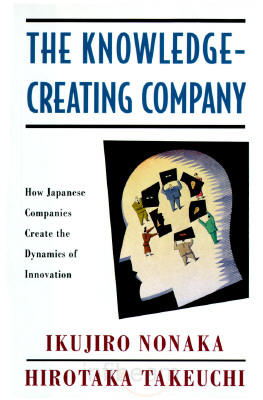

Scrum
ExpressionLab.com
Photo credit: ChrisFrazerSmith.com
A management framework for iterative, incremental software product development.
 Rugby - A new approach to product development based on case studies from Japanese companies.
Ken Schwaber and Jeff Sutherland jointly presented a paper describing the Scrum methodology at the ACM's OOPSLA conference.
Knowledge comes from experience and making decisions based on what is known.
Significant aspects of the process must be visible to those responsible for the outcome.
Scrum users must frequently inspect Scrum artifacts and progress toward a goal to detect undesirable variances.
If some aspects of a process deviate outside acceptable limits, an adjustment must be made as soon as possible.
Chooses how best to accomplish their work, rather than being directed by others outside the team.
Has all competencies needed to accomplish the work without depending on others outside the team.
A shared understanding of what it means for work to be complete.
Responsible for maximizing the value of the product and the work of the Development Team.
The sole person responsible for managing the Product Backlog.
3-9 professionals who deliver a potentially releasable product Increment at the end of each Sprint.
Responsible for ensuring Scrum is understood and enacted.
Time-boxed events to create regularity and to ensure an appropriate amount of time is spent planning.
Missing any of these events results in reduced transparency and is a lost opportunity to inspect and adapt.
The heart of Scrum and the container of all other events.
1-4 weeks during which a “Done”, potentially releasable product Increment is created.

[8 hours for 4-week Sprints]
The work to be performed in the Sprint is planned collaboratively by the entire Scrum Team.
15-minute event for the Development Team to synchronize activities and create a plan for the next 24 hours.
[4 hours for 4-week Sprints]
Held at the end of the Sprint to inspect the Increment and adapt the Product Backlog if needed.
[3 hours for 4-week Sprints]
An opportunity for the Scrum Team to inspect itself and create a plan for improvements.
Product Backlog Grooming
An ongoing process in which the Product Owner and the Development Team collaborate on the details, estimates, and order of Product Backlog items
The set of Product Backlog items selected for the Sprint plus a plan for delivering the product Increment and realizing the Sprint Goal.
The sum of all the Product Backlog items completed during a Sprint and all previous Sprints.
Scrum is a framework structured to support complex product development.
Each component serves a specific purpose and is essential to Scrum’s success and usage.